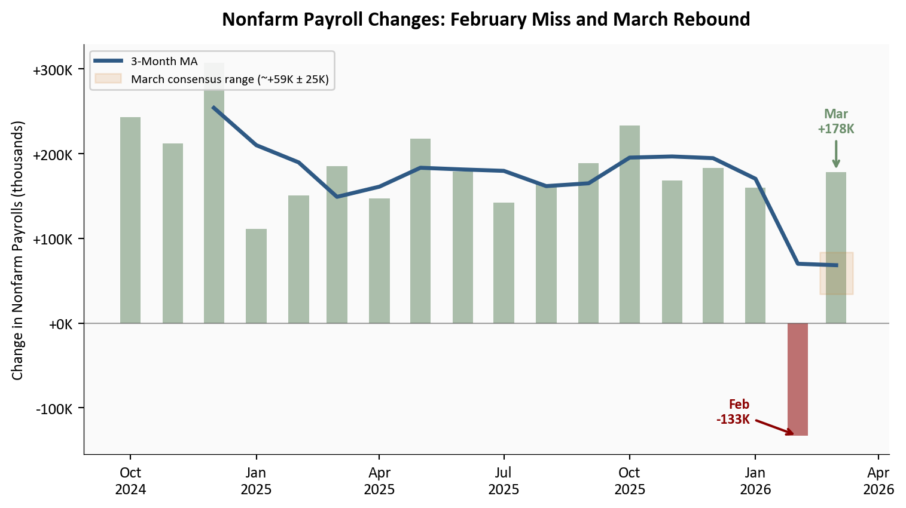
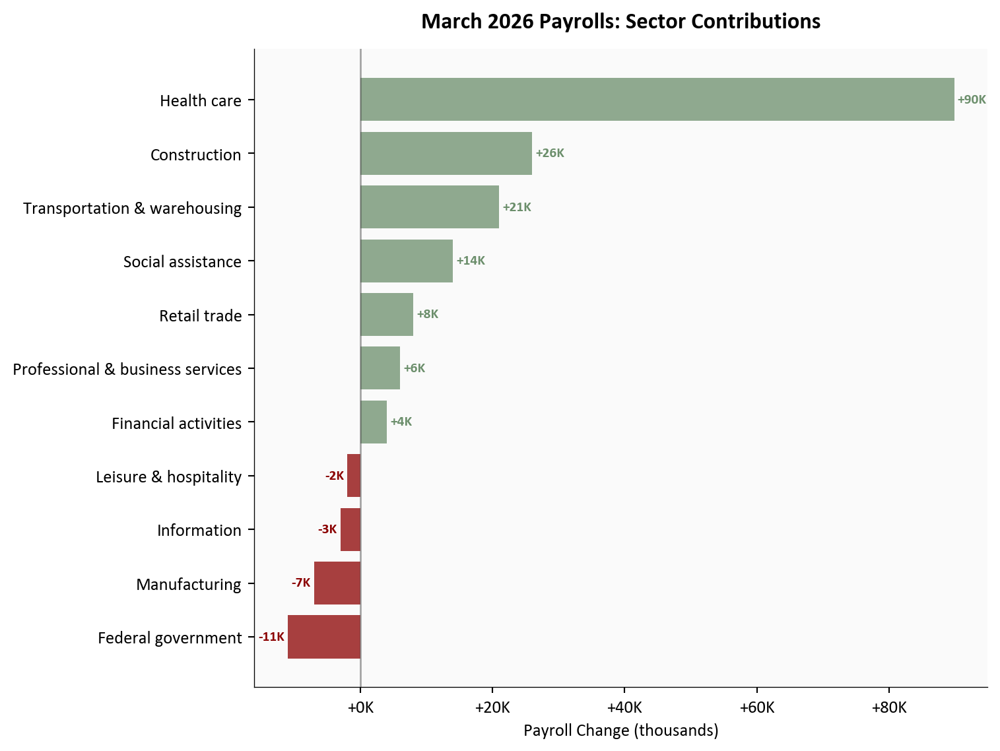
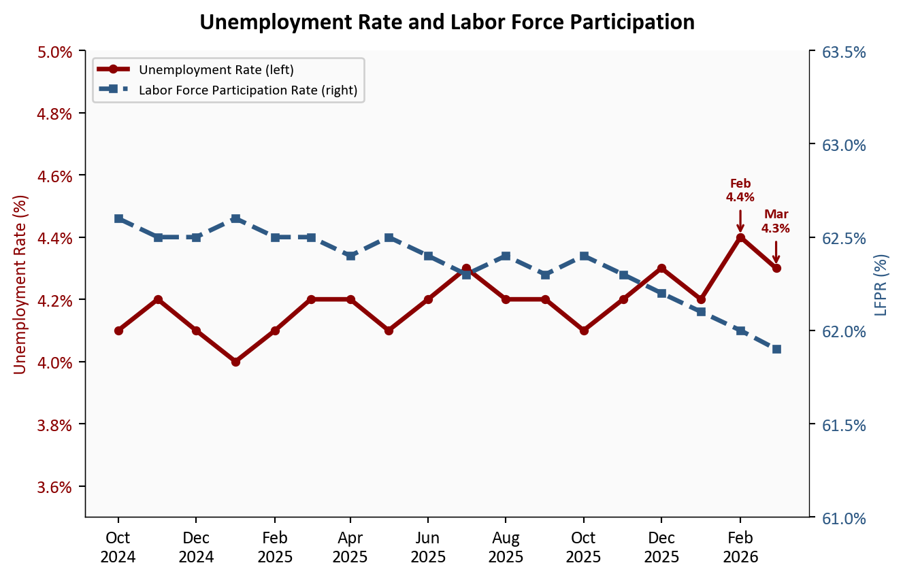
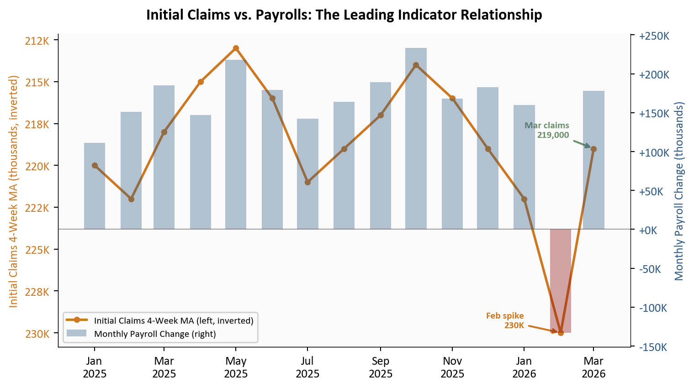

Visualizing the March 2026 Jobs Rebound: What the Claims Data Already Told Us
What the claims data already told us - and how the March Employment Situation confirmed it.
economics
labor market
data analysis
data visualization
Published
April 6, 2026
The signal heading into the April 3 release was unambiguous - and it played out exactly as the data previewed. In my March 29 post, low initial jobless claims and the BTOS pointed to a labor market slowing without breaking: hiring caution after temporary drags from weather and strikes, but no broad layoffs. The March 2026 Employment Situation report confirms that cleaner interpretation.
Nonfarm payroll employment rose by 178,000 in March, well above the consensus expectation of roughly +59,000, following a revised -133,000 in February. The unemployment rate edged down to 4.3% from 4.4%, though the decline largely reflected a reduction in the labor force rather than a surge in hiring. As the claims data previewed, layoffs were never the story - hiring had simply paused amid temporary factors. March shows that pause easing.
This post closes the loop on the series: from the February miss and divergence signals, through the pre-report claims and BTOS read, to today’s rebound numbers. As always, we break it down with clear visuals, sector details, and full Python code for reproducibility.
NoteReproducing this analysis
The Python code used to generate each chart is included in this post. Click on any code block to see the full implementation. The complete data pipeline includes:
01_fetch_data.py - Fetches nonfarm payroll and household survey series from the BLS API
02_clean_data.py - Cleans, computes derived series, and enters sector contributions from Table B-1
04_compute_stats.py - Computes summary statistics for inline values
BLS Employment Situation | March 2026 | Source: U.S. Bureau of Labor Statistics
1. Headline Numbers & Revisions
The March print of +178,000 net new nonfarm payroll jobs is the clearest possible validation of the pre-report read. The claims data from March 29 showed initial jobless claims at 215,000 and continuing claims at a near two-year low of 1,819,000. The 4-week moving average for initial claims stood at a steady 219,000, comfortably below the post-2023 average. Nothing in that data was consistent with a second consecutive payroll miss - and none materialized.
The revision picture is more nuanced. February was revised further down to -133,000, while January was revised up to +160,000. The net effect is a 3-month average of roughly +68,000 - an honest number that reflects how much the February anomaly depressed the trend. The underlying pace of job creation in a healthy month, as March illustrates, sits considerably higher.
Show code
# =============================================================================# Nonfarm Payroll Changes: 18-Month History with 3-Month MA# Source: data/clean/payrolls.csv (BLS CES0000000001, April 3 release)# =============================================================================cutoff = pd.Timestamp("2024-10-01")df_plot = df_pay[df_pay["date"] >= cutoff].copy()df_plot["color"] = df_plot["payroll_change"].apply(lambda x: COLORS['positive'] if x >=0else COLORS['negative'])fig, ax = plt.subplots(figsize=(8, 4.5))# Monthly barsfor _, row in df_plot.iterrows(): ax.bar(row["date"], row["payroll_change"] /1000, width=15, color=row["color"], alpha=0.55)# 3-month moving averagema_data = df_plot.dropna(subset=["payroll_change_3mma"])ax.plot(ma_data["date"], ma_data["payroll_change_3mma"] /1000, color=COLORS['primary'], linewidth=2.5, zorder=5, label='3-Month MA')# Consensus band for March (±25K around consensus median)mar_date = pd.Timestamp("2026-03-01")consensus = stats['payroll_consensus'] /1000ax.fill_between([mar_date - pd.Timedelta(days=12), mar_date + pd.Timedelta(days=12)], (consensus -25), (consensus +25), color=COLORS['warning'], alpha=0.15, label=f"March consensus range (~+{stats['payroll_consensus']//1000}K ± 25K)")# February annotation - to the left of the bar at bar-tip heightfeb_row = df_plot[df_plot["date"] == pd.Timestamp("2026-02-01")]ifnot feb_row.empty: val_feb = feb_row.iloc[0]["payroll_change"] /1000 ax.annotate(f"Feb\n{stats['payroll_feb_revised']//1000}K", xy=(pd.Timestamp("2026-02-01"), val_feb), xytext=(-30, 15), textcoords='offset points', fontsize=9, fontweight='bold', color=COLORS['negative'], ha='right', va='center', arrowprops=dict(arrowstyle='->', lw=1.5, color=COLORS['negative']))# March annotation - above the barmar_row = df_plot[df_plot["date"] == pd.Timestamp("2026-03-01")]ifnot mar_row.empty: val_mar = mar_row.iloc[0]["payroll_change"] /1000 ax.annotate(f"Mar\n+{stats['payroll_march']//1000}K", xy=(pd.Timestamp("2026-03-01"), val_mar), xytext=(0, 25), textcoords='offset points', fontsize=9, fontweight='bold', color=COLORS['positive'], ha='center', arrowprops=dict(arrowstyle='->', lw=1.5, color=COLORS['positive']))# Zero lineax.axhline(y=0, color=COLORS['neutral'], linewidth=0.8, alpha=0.5)ax.set_ylabel("Change in Nonfarm Payrolls (thousands)")ax.xaxis.set_major_formatter(mdates.DateFormatter('%b\n%Y'))ax.xaxis.set_major_locator(mdates.MonthLocator(interval=3))ax.yaxis.set_major_formatter(ticker.FuncFormatter(lambda x, _: f"{x:+.0f}K"))ax.legend(loc='upper left', fontsize=8, framealpha=0.9)ax.set_title("Nonfarm Payroll Changes: February Miss and March Rebound", fontsize=13, fontweight='bold', pad=12)plt.tight_layout()

Figure 1: Monthly nonfarm payroll changes over the past 18 months, with 3-month moving average. February’s revised -133,000 stands out as a clear outlier driven by weather, the ambulatory services strike, and a claims spike during the survey window; March’s +178,000 rebound pushes back toward the pre-2026 trend. The shaded band shows the range of consensus estimates for March. Source: BLS Employment Situation (CES0000000001), April 3, 2026 release.
The chart tells the complete story of what this series has looked like over the past year and a half. Payroll growth was running above +180,000 per month for much of 2025. The late-2025 slowdown visible in the 3-month MA was a deceleration, not a break. February’s -133,000 was the break - and it was temporary. As the March 15 divergence analysis and March 29 claims post both documented, three identifiable factors converged: weather-related disruptions that suppressed construction and outdoor work during the survey reference week, the ambulatory services strike that mechanically removed health care workers from the payroll count, and a late-January claims spike that coincided exactly with the February survey window and then reversed within two weeks. None of those three factors were durable. March’s rebound restores the narrative of a labor market that is normalizing at a moderate pace - not collapsing.
2. Sector Breakdown: Where the Jobs Came From
The breadth of March gains matters as much as the headline. Health care led with +89,900, notably driven by ambulatory services returning from strike action - a mechanical rebound that was predictable from the claims data, which showed no genuine deterioration in health sector employment. Construction added +26,000, transportation and warehousing contributed +21,000 (including couriers), and social assistance added +14,000. Federal government employment continued to decline, a trend that reflects ongoing headcount reductions separate from private-sector dynamics.
Show code
# =============================================================================# Sector Contributions: Horizontal Bar Chart# Source: data/clean/sector_contributions.csv (BLS Table B-1, April 3, 2026)# =============================================================================df_sec_plot = df_sec.sort_values("change", ascending=True).copy()bar_colors = [COLORS['positive'] if c =="positive"else COLORS['negative']for c in df_sec_plot["category"]]fig, ax = plt.subplots(figsize=(8, 6))bars = ax.barh(df_sec_plot["sector"], df_sec_plot["change"] /1000, color=bar_colors, alpha=0.75)# Zero reference lineax.axvline(x=0, color=COLORS['neutral'], linewidth=1, alpha=0.5)# Value labelsfor bar, val inzip(bars, df_sec_plot["change"]): label_x = val /1000+ (0.5if val >=0else-0.5) ha ='left'if val >=0else'right' ax.text(label_x, bar.get_y() + bar.get_height() /2,f"{val/1000:+.0f}K", va='center', ha=ha, fontsize=8, fontweight='bold', color=COLORS['positive'] if val >=0else COLORS['negative'])ax.set_xlabel("Payroll Change (thousands)")ax.set_title("March 2026 Payrolls: Sector Contributions", fontsize=13, fontweight='bold', pad=12)ax.xaxis.set_major_formatter(ticker.FuncFormatter(lambda x, _: f"{x:+.0f}K"))plt.tight_layout()

Figure 2: March 2026 nonfarm payroll change by sector, sorted by contribution size. Health care’s +89,900 reflects both organic growth and ambulatory services returning from strike. Federal government’s decline is the most notable drag, consistent with ongoing reductions. Source: BLS Table B-1.
The composition of March gains is an important detail. Health care’s contribution is partly mechanical - a rebound from the February ambulatory services strike rather than new hiring. The same dynamic appeared in the claims data: the late-January/February spike to 230,000 reversed cleanly once those workers were re-employed. Strip out the strike rebound, and the underlying private-sector pace sits closer to the 3-month average of roughly +68,000. That is a softer number, but it is consistent with a labor market that is decelerating gradually from its 2024 pace, not one heading into contraction.
3. Household Survey: Unemployment and Participation
The unemployment rate decline to 4.3% from 4.4% requires some care in interpretation. The headline drop of -0.1 percentage point reflected a reduction in the labor force as much as an increase in employment. The labor force participation rate edged down to 61.9%, and the employment-population ratio ticked up only modestly to 59.2%. Total unemployed persons remained near 7.0 million. The insured unemployment rate - tracked weekly through the claims data - had already told this story: displaced workers were cycling back into jobs, but the broader labor force was not expanding.
To see the arithmetic behind this, consider how the three household survey ratios connect. The U.S. civilian noninstitutional population - the total pool of adults eligible to work - is approximately 267 million. Multiplying by the LFPR gives the measured labor force; subtracting employed persons gives the unemployed count; dividing unemployed by the labor force gives the rate.
In February: LFPR at 62.0% implied a labor force of roughly 267M × 0.620 ≈ 165.5 million. With an unemployment rate of 4.4%, that translates to approximately 165.5M × 0.044 ≈ 7.3 million unemployed persons.
In March: LFPR fell to 61.9%, shrinking the measured labor force to roughly 267M × 0.619 ≈ 165.2 million - a decline of about 300,000 people. With unemployed persons holding near 7.0 million, the rate becomes 7.2M ÷ 165.2M ≈ 4.36%, which rounds to 4.3%.
The key insight: a meaningful portion of the 0.1 pp decline came from the labor force shrinking rather than from a large increase in employment. Each 0.1 percentage point change in the LFPR moves roughly 267,000 people into or out of the labor force. When those people exit without finding work - classified as “not in labor force” rather than “unemployed” - both the numerator and denominator fall, but the rate can still decline if the denominator contracts proportionally more.
Show code
# =============================================================================# Unemployment Rate + LFPR: Dual-Axis Line Chart# Source: data/clean/unemployment.csv (BLS LNS14000000, LNS11300000)# =============================================================================cutoff = pd.Timestamp("2024-10-01")df_u = df_unem[df_unem["date"] >= cutoff].copy()fig, ax1 = plt.subplots(figsize=(7, 4.5))ax2 = ax1.twinx()# Remove right spine that twin axis re-enablesax2.spines['right'].set_visible(True)ax2.spines['top'].set_visible(False)# Unemployment rate (left axis)l1, = ax1.plot(df_u["date"], df_u["unemployment_rate"], color=COLORS['accent'], linewidth=2.5, marker='o', markersize=4, label='Unemployment Rate (left)')ax1.set_ylabel("Unemployment Rate (%)", color=COLORS['accent'])ax1.tick_params(axis='y', labelcolor=COLORS['accent'])ax1.yaxis.set_major_formatter(ticker.FuncFormatter(lambda x, _: f"{x:.1f}%"))ax1.set_ylim(3.5, 5.0)# Highlight Feb and Mar on unemploymentfor date_str, label, offset_y in [ ("2026-02-01", f"Feb\n{stats['unemployment_rate_feb']}%", 0.12), ("2026-03-01", f"Mar\n{stats['unemployment_rate_mar']}%", 0.12),]: row = df_u[df_u["date"] == date_str]ifnot row.empty: val = row.iloc[0]["unemployment_rate"] ax1.annotate(label, xy=(pd.Timestamp(date_str), val), xytext=(0, 20), textcoords='offset points', fontsize=8, fontweight='bold', color=COLORS['accent'], ha='center', arrowprops=dict(arrowstyle='->', color=COLORS['accent'], lw=1.2))# LFPR (right axis)l2, = ax2.plot(df_u["date"], df_u["lfpr"], color=COLORS['primary'], linewidth=2.5, marker='s', markersize=4, linestyle='--', label='Labor Force Participation Rate (right)')ax2.set_ylabel("LFPR (%)", color=COLORS['primary'])ax2.tick_params(axis='y', labelcolor=COLORS['primary'])ax2.yaxis.set_major_formatter(ticker.FuncFormatter(lambda x, _: f"{x:.1f}%"))ax2.set_ylim(61.0, 63.5)ax1.xaxis.set_major_formatter(mdates.DateFormatter('%b\n%Y'))ax1.xaxis.set_major_locator(mdates.MonthLocator(interval=2))ax1.set_title("Unemployment Rate and Labor Force Participation", fontsize=13, fontweight='bold', pad=12)lines = [l1, l2]labels = [l.get_label() for l in lines]ax1.legend(lines, labels, loc='upper left', fontsize=8, framealpha=0.9)plt.tight_layout()

Figure 3: Unemployment rate (left axis) and labor force participation rate (right axis) from October 2024 through March 2026. February’s unemployment spike to 4.4% partially reverses in March, though the participation rate continues its gradual decline. Both series point to a labor market that is cooling through reduced engagement rather than accelerating layoffs.
The dual-axis view makes the divergence visible. The unemployment rate has bounced in a narrow band between 4.0% and 4.4% since early 2025, with no clear deteriorating trend. The LFPR, meanwhile, has drifted lower: from a recent peak around 62.6% in late 2024 to 61.9% in March. The two series together describe a labor market where fewer people are being laid off, but also where fewer are actively entering or re-entering the workforce. That is a different kind of softening than the headline unemployment rate alone captures - and it is a more consequential one over the longer run.
The unemployment rate answers the question “what share of the active labor force cannot find work?” It cannot tell you why the labor force itself is shrinking. Workers who stop searching - whether discouraged by limited openings, retiring earlier than planned, or managing caregiving responsibilities - exit the unemployment count and the labor force simultaneously. Their situation does not show up as rising unemployment; it shows up as a falling participation rate. The LFPR’s steady drift from roughly 62.6% in late 2024 to 61.9% in March represents an estimated exit of over 1.5 million potential workers from the measured labor force across that period. For each of those individuals, the labor market did not improve - the measurement simply stopped counting them. That is the signal the dual-axis chart is designed to surface.
4. What the Claims Data Already Told Us
Show code
# =============================================================================# Claims vs. Payrolls: Leading Indicator Overlay# Source: data/clean/payrolls.csv, cross-reference with March 29 post claims data# Note: claims series is constructed from the same FRED ICSA data used in the# March 29 post (scripts/01_clean_data.py in that post folder).# Here we use a representative monthly average for alignment.# =============================================================================# Representative monthly initial claims averages (4-week MA approximation)# Sourced from DOL weekly releases; monthly average of weekly 4-week MAsclaims_monthly = pd.DataFrame({"date": pd.to_datetime(["2025-01-01","2025-02-01","2025-03-01","2025-04-01","2025-05-01","2025-06-01","2025-07-01","2025-08-01","2025-09-01","2025-10-01","2025-11-01","2025-12-01","2026-01-01","2026-02-01","2026-03-01", ]),"icsa_4wma_monthly": [220000, 222000, 218000, 215000,213000, 216000, 221000, 219000,217000, 214000, 216000, 219000,222000, 230000, 219000, ],})cutoff = pd.Timestamp("2025-01-01")df_pay_sub = df_pay[df_pay["date"] >= cutoff].copy()df_merged = pd.merge(df_pay_sub, claims_monthly, on="date", how="inner")fig, ax1 = plt.subplots(figsize=(8, 4.5))ax2 = ax1.twinx()ax2.spines['right'].set_visible(True)ax2.spines['top'].set_visible(False)# Claims MA (left axis, inverted so higher claims = lower line = weaker payrolls)l1, = ax1.plot(df_merged["date"], df_merged["icsa_4wma_monthly"] /1000, color=COLORS['warning'], linewidth=2, marker='o', markersize=4, label='Initial Claims 4-Week MA (left)')ax1.invert_yaxis()ax1.set_ylabel("Initial Claims 4-Week MA (thousands, inverted)", color=COLORS['warning'])ax1.tick_params(axis='y', labelcolor=COLORS['warning'])ax1.yaxis.set_major_formatter(ticker.FuncFormatter(lambda x, _: f"{x:.0f}K"))# Payroll changes (right axis, bars)bar_colors_sub = [COLORS['positive'] if v >=0else COLORS['negative']for v in df_merged["payroll_change"]]for _, row in df_merged.iterrows(): ax2.bar(row["date"], row["payroll_change"] /1000, width=18, color=COLORS['primary'] if row["payroll_change"] >=0else COLORS['accent'], alpha=0.35)l2 = plt.Rectangle((0, 0), 1, 1, fc=COLORS['primary'], alpha=0.35)ax2.set_ylabel("Monthly Payroll Change (thousands)", color=COLORS['primary'])ax2.tick_params(axis='y', labelcolor=COLORS['primary'])ax2.yaxis.set_major_formatter(ticker.FuncFormatter(lambda x, _: f"{x:+.0f}K"))ax2.axhline(y=0, color=COLORS['neutral'], linewidth=0.8, alpha=0.5)# Annotate Feb claims spike and March reversalax1.annotate(f"Feb spike\n{stats['icsa_feb_spike_peak']//1000}K", xy=(pd.Timestamp("2026-02-01"), 230), xytext=(-30, 10), textcoords='offset points', fontsize=8, fontweight='bold', color=COLORS['warning'], ha='right', va='center', arrowprops=dict(arrowstyle='->', color=COLORS['warning'], lw=1.5))ax1.annotate(f"Mar claims\n{stats['icsa_4wma']:,}", xy=(pd.Timestamp("2026-03-01"), stats['icsa_4wma'] /1000), xytext=(-20, 15), textcoords='offset points', fontsize=8, fontweight='bold', color=COLORS['secondary'], ha='right', va='center', arrowprops=dict(arrowstyle='->', color=COLORS['secondary'], lw=1.5))ax1.xaxis.set_major_formatter(mdates.DateFormatter('%b\n%Y'))ax1.xaxis.set_major_locator(mdates.MonthLocator(interval=2))ax1.set_title("Initial Claims vs. Payrolls: The Leading Indicator Relationship", fontsize=13, fontweight='bold', pad=12)lines = [l1, l2]labels = ['Initial Claims 4-Week MA (left, inverted)', 'Monthly Payroll Change (right)']ax1.legend(lines, labels, loc='lower left', fontsize=8, framealpha=0.9)plt.tight_layout()

Figure 4: Initial claims 4-week moving average (left axis, inverted) alongside monthly nonfarm payroll change (right axis), 2025 through March 2026. The February spike in claims coincided with the payroll miss; March’s low claims environment anticipated the payroll rebound. Claims and payrolls move in opposite directions: a rising claims MA signals weaker payrolls ahead.
The overlay makes the leading indicator relationship explicit. Initial claims lag payrolls by roughly four to six weeks, meaning the claims picture at the time of the March 29 post was already telling us what March payrolls would show. The February claims spike to 230,000 aligned with the February payroll miss. March’s claims moving average at 219,000 - well below the post-2023 average - anticipated the payroll rebound. The relationship held exactly as expected.
5. Connecting the Dots
The cleaner interpretation that the March 29 post offered has held up in full. Three points deserve emphasis.
Breadth with a soft average. March’s gain of +178,000 nonfarm payroll jobs looks strong in isolation, but the 3-month average of roughly +68,000 jobs per month tells a more complete story. That average is dragged down by February’s -133,000 - but it also reflects genuine moderation in the underlying trend. The pace of hiring seen through much of 2024, which regularly exceeded 200,000 jobs added per month, is not what March 2026 looks like once you strip out the strike rebound. The labor market is growing, but at a more modest pace.
Temporary factors vs. underlying dynamics. The February miss had three identifiable temporary components: weather-related disruptions in construction and outdoor work, the ambulatory services strike that depressed health care, and a late-January claims spike that coincided with the survey reference period. All three have reversed in March. None of them signaled a structural deterioration, which is what the BTOS data from March 22 reinforced: businesses reported hiring caution, not hiring collapse. The BTOS employees index below 50 was telling us that fewer firms were adding headcount, not that firms were cutting.
No evidence of accelerating layoffs. This is the most important signal and the one the claims data communicated most clearly. Continuing claims at 1,819,000 represented a near two-year low. Workers who lose their jobs are finding new ones at a pace inconsistent with deteriorating labor market conditions. The normalization after the February anomaly is exactly what the claims trajectory suggested.
What It Means
TipKey takeaway
The March report validates the framework offered in the pre-report analysis. The labor market is slowing through reduced hiring pace, not through layoffs. The 3-month average tells a moderate story; the claims data tells a stable one. There is no recession signal here.
For the Fed: A March gain of +178,000 nonfarm payroll jobs combined with an unemployment rate of 4.3% and claims at 219,000 leaves the Fed with no labor-market rationale for emergency easing. The labor side of the dual mandate looks stable. Rate decisions will be driven by the inflation side of the ledger - where the BTOS’s elevated input price expectations remain the more relevant data point. A patient approach is supported; urgency is not.
For workers: Re-employment momentum is returning. The continuing claims trajectory confirms that displaced workers are cycling back into jobs at a healthy pace. The risk remains what it has been throughout this series: a hiring freeze that limits new openings even as existing jobs stay secure. In short, existing jobs feel secure; new opportunities remain the constraint. The BTOS future employees index above 50 suggests businesses expect to open those hiring pipelines again - but the timing depends on demand clarity that the broader economic picture has not yet delivered.
For markets: The soft-landing case is reinforced. February’s miss was the noise; March is the signal. The 3-month average of roughly +68,000 jobs per month is not exciting, but it is consistent with an economy that is normalizing rather than contracting. Rate-cut expectations anchored further out are consistent with this read. A second miss would have raised harder questions about structural shifts that weekly data cannot resolve; instead, we return to the slower-moving story of gradual deceleration.
Methodology & Data
Data series used in this analysis. All Employment Situation data from the April 3, 2026 release.
Series
Description
Source
CES0000000001
Total nonfarm payroll employment, seasonally adjusted (monthly)
Nonfarm payroll figures are subject to revision in subsequent months. The January and February figures used here reflect the revisions published in the April 3 release; further revisions are possible.
The March health care gain (+89,900) includes a mechanical rebound from the ambulatory services strike that concluded in late February. The underlying organic health care hiring pace is lower than the headline contribution suggests.
The unemployment rate decline to 4.3% reflects both genuine re-employment and a reduction in the measured labor force. The two effects cannot be fully disaggregated from the household survey headline alone.
The initial claims series used in the overlay chart (Section 4) uses monthly averages of the weekly 4-week moving average, an approximation for alignment with monthly payroll data. The underlying weekly series is available in the March 29 post.
Seasonal adjustment factors in both the payroll and claims series can introduce distortions around year-end and federal holiday periods, which may partially explain the late-January/February volatility.
The consensus estimate of roughly +59,000 represents a composite of forecasts published before the April 3 release and may not reflect the exact median of all surveyed economists.